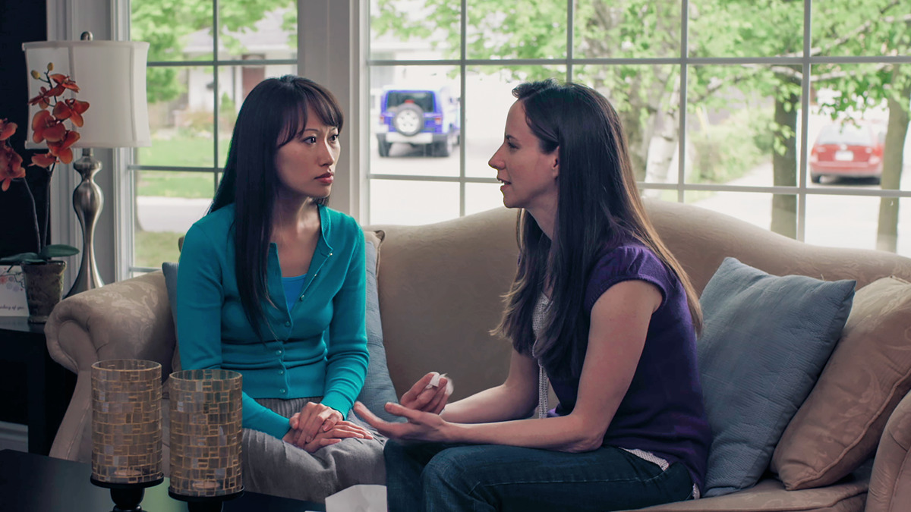

🤝 Não se esqueça de nossos irmãos e irmãs inativos
Nossa Vida Cristã · 16 a 22 de novembro de 2026 · parte 7 (15 min) · consideração com vídeo
O texto da apostila, o vídeo em resumo com os minutos de cada parte e cinco lições prontas para a pergunta “Que
lições você aprendeu com esse vídeo?”. Cada lição tem o versículo do seu JW Library, o que o vídeo e as publicações
dizem, um comentário pronto de até 30 segundos e um segundo comentário. Tudo com o botão “de onde veio”.
⏱ 15 min🎬 vídeo de 7:08🙋 5 lições prontas🔎 Guia de Pesquisa incluído
O texto da apostila
7. Não se esqueça de nossos irmãos e irmãs inativos (15 min) Consideração.
Nós fazemos o nosso máximo procurando as pessoas que querem aprender sobre Jeová e servir a ele. Mas não podemos
esquecer daqueles que “fazem parte da nossa família na fé” e estão inativos. (Gál. 6:10)
Nossos irmãos e irmãs podem ficar inativos por vários motivos. Alguns se envolvem demais com o trabalho, ficam
sobrecarregados com os problemas da vida, sofrem de depressão ou outros problemas de saúde. Também, alguns sofrem com
uma consciência pesada, e ainda outros tropeçaram por causa do que uma pessoa fez, ou foram magoados por alguém.
Muitos que estão inativos ainda amam a Jeová, mas talvez achem que não merecem voltar a servi-lo. Os anciãos querem
muito ajudar esses irmãos e irmãs a voltar para Jeová e tomam a iniciativa em fazer isso. (1 Ped. 5:2) Mas e você?
Como poderia ajudar alguém que está inativo?
Mostre o VÍDEOAjudar os Inativos. Depois, pergunte:
Que lições você aprendeu com esse vídeo?

Imagem da apostila: uma cena do vídeo Ajudar os Inativos. A irmã escuta com atenção a irmã
inativa abrindo seu coração.
Gálatas 6:10 Então, enquanto tivermos oportunidade, façamos o bem a todos, mas especialmente aos que fazem parte da nossa família na fé.Tradução do Novo Mundo (edição de estudo), do seu JW Library
1 Pedro 5:2 pastoreiem o rebanho de Deus, que está aos seus cuidados, servindo como superintendentes não por obrigação, mas de boa vontade perante Deus; não por amor ao ganho desonesto, mas com entusiasmo;Tradução do Novo Mundo (edição de estudo), do seu JW Library
📍 de onde veio
jw.org
Apostila Vida e Ministério, novembro-dezembro de 2026
Programação de 16-22 de novembro
Nossa Vida Cristã, parte 7
Para citar: Apostila Vida e Ministério de novembro-dezembro de 2026, semana de 16 a 22 de novembro, parte 7
Na apostila, a referência a Gálatas 6:10 vem depois de um travessão; aqui ela está entre parênteses.
Vídeo Ajudar os Inativos (7:08), do JW Broadcasting de novembro de 2015. Ebbe narra a história.
Laura é a irmã inativa, e o irmão Clark é o ancião.
Atenção: este vídeo não tem legenda oficial em português. O resumo e as frases entre aspas saíram do
áudio em português e foram conferidos com a legenda oficial em inglês. Os minutos são do vídeo em português e são
aproximados (alguns segundos para mais ou para menos).
0:0018 s
Ebbe apresenta Laura
Ebbe mostra os amigos e a família. Depois mostra Laura e diz: “Laura é minha irmã, mas até uns meses atrás eu nem sabia que ela existia.”
0:1842 s
O encontro no metrô
Ebbe não sabia que metrô pegar. Laura ajudou e deu um mapa a ela. Ebbe deu um folheto a Laura. Na conversa, descobriu que Laura também era Testemunha de Jeová e morava perto. Mas Ebbe nunca tinha visto Laura no Salão.
1:0036 s
O jantar com o irmão Clark
O irmão Clark é ancião da congregação. Ele conhecia Laura: ela estava inativa havia bastante tempo, e os irmãos já tinham tentado ajudar. Ebbe pergunta se pode visitar Laura. Ele acha uma ótima ideia.
1:3638 s
A primeira visita não dá certo
Ebbe achava que logo as duas seriam grandes amigas. Mas não chegou numa boa hora, e a visita não deu certo. Ela ficou sem graça. Pensou: se nem os anciãos tinham conseguido, quanto mais ela. Era melhor deixar com eles.
2:1442 s
O ancião anima Ebbe
Ebbe conta tudo ao irmão Clark e pede desculpas. Ele entende e elogia o interesse dela. Diz que os anciãos não iam desistir dela e que Ebbe também não deveria desistir. Depois lê Lucas 15:8, a mulher que perde uma das dez dracmas, acende a lâmpada e varre a casa.
2:5639 s
Laura não era uma simples moeda
O irmão Clark diz que Ebbe tinha capacidade de ajudar, mas precisava persistir. Ebbe entende: como a moeda da ilustração, Laura, a irmã dela, estava perdida. Ela decide fazer tudo o que puder, mas do jeito certo.
3:3521 s
Preparação
“Fiz pesquisas, orei e me preparei.”
3:5624 s
A segunda visita
Ebbe tenta fazer algo diferente. Laura ainda não se abre muito, mas melhora um pouco. “Eu não desisti. E os anciãos também não.”
4:201 min
Cenas sem fala, só música
Dois irmãos visitam Laura na sala. Laura chega ao Salão do Reino, é recebida com abraço e senta ao lado de Ebbe na reunião. Aparece a mulher da ilustração, com a lâmpada acesa, procurando no escuro.
Descrição das cenas feita nesta preparação: não há fala nesse trecho.
5:2223 s
Levou tempo
“Não foi fácil. Levou tempo.” Mas as duas foram se conhecendo melhor, e aos poucos Laura foi se abrindo.
5:4530 s
Ouvir e abraçar
Por causa do desânimo e da depressão, às vezes Laura falava coisas sem pensar. Ebbe se esforçava para ser uma boa ouvinte. Um dia ela abraçou Laura e disse: “gosto muito de você e sei que Jeová te ama.”
A imagem da apostila é uma cena desse momento: as duas no sofá, uma escutando a outra.
6:1553 s
O que Ebbe aprendeu
Ebbe achou a irmã que estava perdida. E aprendeu: “nós não precisamos ser anciãos para ajudar um irmão ou irmã que se perdeu. Precisamos apenas ouvi-los e mostrar amor.” Termina dizendo que achou Laura, a irmã que estava perdida, e uma nova amiga.
📍 de onde veio
Apostila, parte 7: link “Mostre o VÍDEO” (pub-jwbai_201511_1_VIDEO)
jw.org: API de mídia (mediator), português do Brasil
Ajudar os Inativos, JW Broadcasting de novembro de 2015, 7:08
Áudio dublado em português, transcrito nesta preparação
Sentido conferido na legenda oficial em inglês (jwbai_E_201511_01.vtt)
Para citar: Vídeo Ajudar os Inativos (jw.org)
O vídeo não tem legenda oficial em português. As frases entre aspas saíram do áudio; confira de ouvido antes de citar palavra por palavra. O nome “Ebbe” é o da apostila de abril de 2017.
Não precisamos ser anciãos para ajudar: todos podemos
Gálatas 6:10 Então, enquanto tivermos oportunidade, façamos o bem a todos, mas especialmente aos que fazem parte da nossa família na fé.Tradução do Novo Mundo (edição de estudo), do seu JW Library
💡 O que o vídeo e as publicações dizem
No fim do vídeo (6:22), Ebbe resume: “nós não precisamos ser anciãos para ajudar um irmão ou irmã que se perdeu. Precisamos apenas ouvi-los e mostrar amor.”
A apostila de abril de 2017, que usou este mesmo vídeo, diz: “Mas não são só os anciãos que podem fazer isso. Todos nós podemos ajudar os inativos.”
A Sentinela de junho de 2020 (§ 6) pergunta quem pode ajudar a procurar os inativos e responde: “Todos nós”. Anciãos, pioneiros, membros da família e publicadores.
Gálatas 6:10 fala de fazer o bem “especialmente aos que fazem parte da nossa família na fé”. O Nosso Ministério do Reino de junho de 2002 mostra um jeito simples: “Mostre interesse tomando tempo para ouvi-los e edificá-los.”
🙋 Comentário pronto (até 30 segundos)
Gostei do que a Ebbe aprendeu no fim do vídeo. Ela disse que não precisamos ser anciãos para ajudar um irmão que se afastou. Basta ouvir e mostrar amor. E Gálatas 6:10 diz que devemos fazer o bem especialmente à nossa família na fé. Então, se eu conheço alguém que está inativo, eu posso fazer a minha parte. Uma visita, uma conversa, um ouvido atento.
➕ Para um segundo comentário
Exemplo publicado, ótimo para quem tem idade. Pablo ficou inativo por mais de 30 anos. Um dia de manhã, ao sair de casa, ele encontrou “uma irmã idosa muito boazinha”. Ela falou com tanto amor que ele chorou e disse: “Acho que foi Jeová que enviou você para falar comigo.” Naquele momento ele decidiu voltar. (A Sentinela de junho de 2020, § 13)
Preparação pessoal: a irmã que já não consegue sair para o campo pode ligar para a irmã que parou de vir às reuniões, perguntar como ela está e só escutar.
📍 de onde veio
Apostila, parte 7: link “Mostre o VÍDEO” (pub-jwbai_201511_1_VIDEO)
jw.org: API de mídia (mediator), português do Brasil
Ajudar os Inativos, JW Broadcasting de novembro de 2015, 7:08
Áudio dublado em português, transcrito nesta preparação
Sentido conferido na legenda oficial em inglês (jwbai_E_201511_01.vtt)
Para citar: Vídeo Ajudar os Inativos (jw.org)
O vídeo não tem legenda oficial em português. As frases entre aspas saíram do áudio; confira de ouvido antes de citar palavra por palavra. O nome “Ebbe” é o da apostila de abril de 2017.
Para citar:A Sentinela de junho de 2020, páginas 27 e 28, parágrafo 13
A primeira frase está na página 27; o relato de Pablo e da irmã idosa, na 28. O Guia de Lucas 15:8 aponta os §§ 3-4. Esta frase está em outro parágrafo do mesmo artigo, conferido no wol.
Para citar: Não citar como publicação: é ilustração ou aplicação pessoal.
Lição 2
Trabalhe junto com os anciãos
1 Pedro 5:2 pastoreiem o rebanho de Deus, que está aos seus cuidados, servindo como superintendentes não por obrigação, mas de boa vontade perante Deus; não por amor ao ganho desonesto, mas com entusiasmo;Tradução do Novo Mundo (edição de estudo), do seu JW Library
💡 O que o vídeo e as publicações dizem
Antes de visitar Laura, Ebbe perguntou ao irmão Clark, que é ancião, se podia ir (1:27). Ele conhecia Laura e sabia que os irmãos já tinham tentado ajudar (1:08).
Depois da primeira visita, ela voltou e contou tudo a ele (2:17). Ele elogiou o interesse dela e disse que os anciãos não iam desistir de Laura (2:32).
A apostila de abril de 2017 fez esta pergunta sobre o vídeo: “Por que devemos falar com os anciãos antes de tentar ajudar um irmão inativo?”
1 Pedro 5:2 pede aos anciãos que pastoreiem o rebanho “de boa vontade”. A Sentinela de 15/6/2007 explica que a palavra grega para superintendente se liga a um verbo que significa “vigiar cuidadosamente”. E A Sentinela de janeiro de 2023 (§ 11) diz que os anciãos mostram amor a Jeová e a Jesus quando tiram tempo para “ajudar os inativos a retornarem para Jeová”.
A Sentinela de junho de 2020: se você encontrar um inativo que queira uma visita, pode passar o contato dele para os anciãos (§ 6). E, se os anciãos pedirem para você dirigir o estudo de um inativo, “o que acha de aceitar o privilégio?” (§ 15)
🙋 Comentário pronto (até 30 segundos)
Uma coisa que a Ebbe fez certo foi falar com o ancião antes. O irmão Clark conhecia a Laura e sabia o que os irmãos já tinham tentado. Depois da primeira visita, ela voltou e contou tudo para ele, e ele animou a Ebbe a não desistir. Primeiro Pedro 5:2 mostra que os anciãos pastoreiam o rebanho. Nós ajudamos junto com eles. Ninguém precisa fazer isso sozinho.
➕ Para um segundo comentário
Preparação pessoal: quem tem idade às vezes lembra de um irmão que sumiu há muitos anos. Uma ideia é contar a um ancião: “O irmão que sentava ali no fundo mora perto de mim.” Esse aviso já é uma ajuda.
📍 de onde veio
Apostila, parte 7: link “Mostre o VÍDEO” (pub-jwbai_201511_1_VIDEO)
jw.org: API de mídia (mediator), português do Brasil
Ajudar os Inativos, JW Broadcasting de novembro de 2015, 7:08
Áudio dublado em português, transcrito nesta preparação
Sentido conferido na legenda oficial em inglês (jwbai_E_201511_01.vtt)
Para citar: Vídeo Ajudar os Inativos (jw.org)
O vídeo não tem legenda oficial em português. As frases entre aspas saíram do áudio; confira de ouvido antes de citar palavra por palavra. O nome “Ebbe” é o da apostila de abril de 2017.
Para citar:A Sentinela de junho de 2020, página 29, parágrafo 15
O § 15 começa na página 28; a frase sobre dirigir o estudo está na 29. O Guia de Lucas 15:8 aponta os §§ 3-4. Esta frase está em outro parágrafo do mesmo artigo, conferido no wol.
Para citar: Não citar como publicação: é ilustração ou aplicação pessoal.
Lição 3
Não desista na primeira porta fechada
Gálatas 6:9 Assim, não desistamos de fazer o que é bom, pois colheremos no tempo devido, se não desanimarmos.Tradução do Novo Mundo (edição de estudo), do seu JW Library
💡 O que o vídeo e as publicações dizem
A primeira visita não deu certo (1:48). Ebbe ficou sem graça e pensou que era melhor deixar tudo com os anciãos (2:07).
O irmão Clark disse que ela tinha capacidade de ajudar, mas precisava persistir (3:07).
Antes de voltar, ela mudou o jeito: “fiz pesquisas, orei e me preparei” (3:42). Na segunda visita, Laura ainda não se abriu muito, mas melhorou um pouco. “Eu não desisti. E os anciãos também não.” (4:13)
A Sentinela de junho de 2020 (§ 10): “Precisamos ser pacientes porque leva tempo para uma pessoa recuperar a saúde espiritual.” Muitos só voltaram depois de várias visitas dos anciãos e de outros irmãos.
O quadro da página 26 descreve o amigo de que a pessoa inativa precisa: alguém que “esteja disposto a sempre manter contato, e que vá visitá-la até mesmo várias vezes”.
🙋 Comentário pronto (até 30 segundos)
A primeira visita da Ebbe não deu certo, e ela ficou sem graça. Mas ela não parou. Ela pesquisou, orou e se preparou, e voltou de outro jeito. A Sentinela de junho de 2020 diz que precisamos ser pacientes, porque leva tempo para uma pessoa se recuperar. Muitos só voltaram depois de várias visitas. Então, uma porta fechada hoje não é uma porta fechada para sempre.
➕ Para um segundo comentário
Preparação pessoal: Gálatas 6:9 vem logo antes do texto da apostila: “não desistamos de fazer o que é bom”. Para quem tem idade e não pode visitar sempre: um telefonema por semana, um bilhete, uma fruta do quintal. Pouco, mas sempre. (No vídeo, perto de 4:00, Ebbe aparece na porta de Laura com uma sacola de frutas e pão.)
📍 de onde veio
Apostila, parte 7: link “Mostre o VÍDEO” (pub-jwbai_201511_1_VIDEO)
jw.org: API de mídia (mediator), português do Brasil
Ajudar os Inativos, JW Broadcasting de novembro de 2015, 7:08
Áudio dublado em português, transcrito nesta preparação
Sentido conferido na legenda oficial em inglês (jwbai_E_201511_01.vtt)
Para citar: Vídeo Ajudar os Inativos (jw.org)
O vídeo não tem legenda oficial em português. As frases entre aspas saíram do áudio; confira de ouvido antes de citar palavra por palavra. O nome “Ebbe” é o da apostila de abril de 2017.
Cenas do vídeo sem fala, descritas nesta preparação
Para citar: Não citar como publicação: é a descrição pessoal do que aparece na tela.
Lição 4
Cada irmão inativo é precioso, como a moeda perdida
Lucas 15:8-108 “Ou que mulher que, tendo dez dracmas e perdendo uma dracma, não acende uma lâmpada, varre a casa e procura cuidadosamente até achá-la? 9 E, quando a acha, ela reúne as suas amigas e vizinhas, e diz: ‘Alegrem-se comigo, porque achei a dracma que havia perdido.’ 10 Eu lhes digo que, da mesma forma, há alegria entre os anjos de Deus por causa de um pecador que se arrepende.”Tradução do Novo Mundo (edição de estudo), do seu JW Library
💡 O que o vídeo e as publicações dizem
O irmão Clark leu para Ebbe a ilustração de Lucas 15:8 (2:39). Ebbe entendeu que Laura não era uma simples moeda: era a irmã dela, e estava perdida (3:14).
A Sentinela de junho de 2020 (§ 4) explica: a moeda talvez fizesse parte de um conjunto de dez dracmas que a mulher ganhou da mãe no dia do casamento. A lâmpada a óleo era fraca, então ela varreu a casa toda até ver a moeda brilhar no meio da poeira.
“A parte importante dessa ilustração é o quanto a mulher se esforçou para encontrar a moeda.” (§ 3)
A apostila de abril de 2017 lembra que os irmãos inativos “ainda são preciosos para Jeová. Eles foram comprados com o sangue do Filho dele.”
A Sentinela de junho de 2020 (§ 1): Jeová e os anjos ficam muito felizes mesmo quando apenas um adorador que estava afastado volta para ele.
🙋 Comentário pronto (até 30 segundos)
O que me tocou foi a moeda perdida. A Sentinela de junho de 2020 diz que aquela moeda talvez fosse um presente que a mulher ganhou da mãe no casamento. Por isso ela acendeu a lâmpada e varreu a casa toda. A Ebbe percebeu que a Laura não era uma simples moeda. Era a irmã dela. Cada irmão inativo vale muito para Jeová, e para nós também.
➕ Para um segundo comentário
Preparação pessoal: quem já perdeu os óculos dentro de casa sabe como é. A gente acende a luz, olha embaixo do móvel, varre o canto e não descansa até achar. É esse o cuidado que a ilustração mostra, e o que Jeová sente por quem se afastou.
📍 de onde veio
Apostila, parte 7: link “Mostre o VÍDEO” (pub-jwbai_201511_1_VIDEO)
jw.org: API de mídia (mediator), português do Brasil
Ajudar os Inativos, JW Broadcasting de novembro de 2015, 7:08
Áudio dublado em português, transcrito nesta preparação
Sentido conferido na legenda oficial em inglês (jwbai_E_201511_01.vtt)
Para citar: Vídeo Ajudar os Inativos (jw.org)
O vídeo não tem legenda oficial em português. As frases entre aspas saíram do áudio; confira de ouvido antes de citar palavra por palavra. O nome “Ebbe” é o da apostila de abril de 2017.
Para citar: Não citar como publicação: é ilustração ou aplicação pessoal.
Lição 5
Ouça sem julgar e diga que Jeová ama
Tiago 1:19 Tenham isto em mente, meus amados irmãos: todos devem ser prontos para ouvir, mas devem demorar para falar e demorar para ficar irados;Tradução do Novo Mundo (edição de estudo), do seu JW Library
💡 O que o vídeo e as publicações dizem
Por causa do desânimo e da depressão, às vezes Laura falava coisas sem pensar (5:45). Ebbe se esforçava para ser uma boa ouvinte (5:54). Um dia ela abraçou Laura e disse: “gosto muito de você e sei que Jeová te ama” (6:00).
A Sentinela de junho de 2020 (§ 11) diz que a empatia “é como um medicamento poderoso” e cita Tiago 1:19. María, que ficou inativa por um tempo, contou: “Eu precisava de um amigo para desabafar, uma mão para me apoiar e um ombro para chorar.”
O quadro da página 26: a pessoa precisa de um amigo que esteja preparado para escutar com empatia, “que entenda as dificuldades dela e não a julgue”.
§ 13: “É importante dizermos aos inativos que Jeová os ama e que nós os amamos também.”
🙋 Comentário pronto (até 30 segundos)
Gostei de ver a Ebbe ouvindo. Às vezes a Laura falava coisas sem pensar, por causa do desânimo e da depressão. Mas a Ebbe continuou ouvindo. E um dia abraçou a Laura e disse que gostava muito dela e que Jeová a amava. A Sentinela de junho de 2020 diz que a empatia é como um medicamento poderoso. Às vezes, ouvir com calma ajuda mais do que falar muito.
➕ Para um segundo comentário
A imagem da apostila mostra isso: “a irmã escuta com atenção a irmã inativa abrindo seu coração”.
Preparação pessoal: tempo para ouvir é uma coisa que muitos irmãos de idade têm. Uma cadeira na varanda, um cafezinho e a paciência de deixar o outro falar até o fim.
📍 de onde veio
Apostila, parte 7: link “Mostre o VÍDEO” (pub-jwbai_201511_1_VIDEO)
jw.org: API de mídia (mediator), português do Brasil
Ajudar os Inativos, JW Broadcasting de novembro de 2015, 7:08
Áudio dublado em português, transcrito nesta preparação
Sentido conferido na legenda oficial em inglês (jwbai_E_201511_01.vtt)
Para citar: Vídeo Ajudar os Inativos (jw.org)
O vídeo não tem legenda oficial em português. As frases entre aspas saíram do áudio; confira de ouvido antes de citar palavra por palavra. O nome “Ebbe” é o da apostila de abril de 2017.
Para citar:A Sentinela de junho de 2020, páginas 26 e 27, parágrafo 11
“Medicamento poderoso” está na página 26; a frase de María, na 27. O Guia de Lucas 15:8 aponta os §§ 3-4. Esta frase está em outro parágrafo do mesmo artigo, conferido no wol.
Para citar:A Sentinela de junho de 2020, páginas 27 e 28, parágrafo 13
A primeira frase está na página 27; o relato de Pablo e da irmã idosa, na 28. O Guia de Lucas 15:8 aponta os §§ 3-4. Esta frase está em outro parágrafo do mesmo artigo, conferido no wol.
Para citar: Não citar como publicação: é ilustração ou aplicação pessoal.
Como conduzir os 15 minutos
0:001 min 30
Introdução com Gálatas 6:10
Resuma o texto da apostila e leia Gálatas 6:10.
“No campo, procuramos as pessoas que querem conhecer a Jeová. Mas Gálatas 6:10 lembra de outro
grupo: a nossa família na fé. Alguns irmãos ficaram inativos. Às vezes foi o trabalho, a doença, a depressão ou uma
mágoa. Muitos ainda amam a Jeová. Os anciãos tomam a iniciativa de ajudar. Mas e você? Como poderia ajudar? Vamos
ver o que uma irmã jovem aprendeu.”
1:307:08
Vídeo
Antes, peça atenção a duas coisas: o que Ebbe fez depois que a primeira visita não deu certo, e o texto que o
ancião leu para ela.
8:405 min 20
“Que lições você aprendeu com esse vídeo?”
Dá para uns seis ou sete comentários curtos. Se ficar parado, use as perguntas que a apostila de abril de 2017
fez sobre este mesmo vídeo:
“O que Ebbe fez quando encontrou uma irmã que ela não conhecia?”O que se quer ouvir: Ajudou a pegar o metrô certo, deu um folheto e puxou conversa. Depois, no jantar com o ancião, soube que Laura estava inativa e pediu para visitá-la (0:18 a 1:30). (lição 1)
“Por que devemos falar com os anciãos antes de tentar ajudar um irmão inativo?”O que se quer ouvir: Eles conhecem a pessoa e o que já foi tentado; o irmão Clark orientou e animou Ebbe. (lição 2)
“Antes de visitar Laura pela segunda vez, como Ebbe se preparou?”O que se quer ouvir: “Fiz pesquisas, orei e me preparei” (3:42). (lição 3)
“Como Ebbe mostrou persistência, paciência e amor?”O que se quer ouvir: Voltou depois da primeira visita, deu tempo ao tempo, ouviu e abraçou. (lição 3 e 5)
“O que podemos aprender da ilustração de Jesus em Lucas 15:8-10?”O que se quer ouvir: Cada irmão inativo é precioso e vale o esforço de procurar. (lição 4)
“Vários irmãos se esforçaram para ajudar Laura. Quais foram os resultados?”O que se quer ouvir: Laura foi se abrindo, e Ebbe achou a irmã que estava perdida e uma nova amiga. Nas cenas sem fala, Laura aparece no Salão do Reino. (lição 1 e 4)
📍 de onde veio
wol.jw.org: busca por “Ajudar os Inativos”
Apostila Nossa Vida e Ministério Cristão, abril de 2017 (semana de 10-16 de abril)
“Você também pode ajudar um irmão inativo”
“Assista ao vídeo Ajudar os Inativos. Depois, responda”
Para citar: Apostila Nossa Vida e Ministério Cristão de abril de 2017, página 5, perguntas sobre o vídeo
Essa apostila usou este mesmo vídeo em abril de 2017.
Apostila, parte 7: link “Mostre o VÍDEO” (pub-jwbai_201511_1_VIDEO)
jw.org: API de mídia (mediator), português do Brasil
Ajudar os Inativos, JW Broadcasting de novembro de 2015, 7:08
Áudio dublado em português, transcrito nesta preparação
Sentido conferido na legenda oficial em inglês (jwbai_E_201511_01.vtt)
Para citar: Vídeo Ajudar os Inativos (jw.org)
O vídeo não tem legenda oficial em português. As frases entre aspas saíram do áudio; confira de ouvido antes de citar palavra por palavra. O nome “Ebbe” é o da apostila de abril de 2017.
Para citar: Não citar como publicação: é ilustração ou aplicação pessoal.
14:0040 s
A imagem da apostila
Mostre a imagem e pergunte: “O que essa irmã está fazendo?” Resposta: está escutando com atenção (lição 5).
Lembre o passo prático de A Sentinela de junho de 2020, § 6: se encontrar um inativo que queira uma visita,
ofereça passar o contato dele para os anciãos.
14:4020 s
Fecho
“A Ebbe achou a irmã que estava perdida e ganhou uma amiga. Nós também podemos ajudar. Não
precisamos ser anciãos. Precisamos ouvir e mostrar amor.”
Se o tempo apertar
Corte os segundos comentários e use só uma pergunta de apoio. A imagem pode ser mostrada junto com o fecho.
Não pode faltar
Gálatas 6:10: são da nossa família na fé.
Todos podemos ajudar, sempre junto com os anciãos.
O tom de amor: ouvir, não julgar, dizer que Jeová ama.
O roteiro, as falas de introdução e fecho, os comentários prontos e os exemplos marcados como
preparação pessoal são notas de preparação, não publicação.
📍 de onde veio
Preparação pessoal
Escrito nesta preparação
Para citar: Não citar como publicação: é ilustração ou aplicação pessoal.
O tom certo: amor, sem culpar
A apostila fala de motivos: trabalho demais, problemas da vida, depressão ou outros problemas de saúde,
consciência pesada, tropeço por causa do que alguém fez, mágoa. E diz: “Muitos que estão inativos ainda amam a
Jeová, mas talvez achem que não merecem voltar a servi-lo.”
A Sentinela de janeiro de 2024 (§ 18) lembra que eles podem ter ficado com medo de não ser bem recebidos,
e avisa: “Não diga nada que poderia deixá-los com vergonha ou magoados.”
Na ilustração de Jesus, o filho que volta “acha que não merece mais ser tratado como um filho”. O pai corre,
abraça bem forte e mostra empatia. (A Sentinela de junho de 2020, § 8)
Para quem está inativo, a mensagem é a do § 18 do mesmo artigo: “Jeová ainda ama você.” Ele “está de braços
abertos esperando por você”.
No vídeo, o ancião não desiste de Laura (2:32), e Ebbe chama Laura de “minha irmã” do começo ao fim.
📍 de onde veio
jw.org
Apostila Vida e Ministério, novembro-dezembro de 2026
Programação de 16-22 de novembro
Nossa Vida Cristã, parte 7
Para citar: Apostila Vida e Ministério de novembro-dezembro de 2026, semana de 16 a 22 de novembro, parte 7
Na apostila, a referência a Gálatas 6:10 vem depois de um travessão; aqui ela está entre parênteses.
Apostila, parte 7: link “Mostre o VÍDEO” (pub-jwbai_201511_1_VIDEO)
jw.org: API de mídia (mediator), português do Brasil
Ajudar os Inativos, JW Broadcasting de novembro de 2015, 7:08
Áudio dublado em português, transcrito nesta preparação
Sentido conferido na legenda oficial em inglês (jwbai_E_201511_01.vtt)
Para citar: Vídeo Ajudar os Inativos (jw.org)
O vídeo não tem legenda oficial em português. As frases entre aspas saíram do áudio; confira de ouvido antes de citar palavra por palavra. O nome “Ebbe” é o da apostila de abril de 2017.
Gálatas 6:10: “‘Quer’ ajudar outros?” (km 6/02 pág. 1 par. 3): visitar, ouvir e ajudar de maneiras
práticas os irmãos com problemas de saúde e outras dificuldades.
1 Pedro 5:2: “O amor do Cristo nos impele” (w23.01 pág. 29 pars. 10-11): os anciãos mostram amor quando
ajudam os inativos a retornarem. “Você se preocupa com os outros assim como Jeová se preocupa?” (w07 15/6 págs.
19-20): superintendente é quem vigia cuidadosamente.
Lucas 15:8 (lido no vídeo): “Voltem para mim” (w20.06 págs. 24-25 pars. 3-4). O artigo inteiro é sobre
ajudar os inativos: paciência (§ 10), empatia (§ 11), amor (§§ 12-13) e o quadro “Como ajudar uma pessoa que quer
voltar” (pág. 26).
📍 de onde veio
JW Library
Guia de Pesquisa
Gálatas 6:10
“‘Quer’ ajudar outros?” (km 6/02 pág. 1 par. 3)
wol.jw.org: § 3
Para citar:Nosso Ministério do Reino de junho de 2002, página 1, parágrafo 3
O texto de 2002 usa “aparentados conosco na fé”, a tradução antiga de Gálatas 6:10.